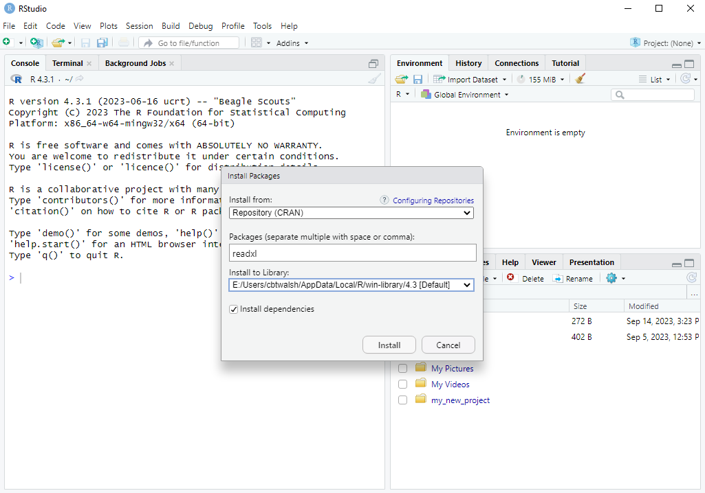
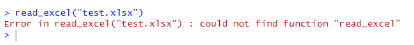

install.packages("readxl")9 R Packages
Up to now we have been using the standard functions that come by default with R. However, certain operations that we want to do are not available as functions in “base R” (the default functionality within R). Whenever this happens, we need to load functions from other “packages” that allow us to do the operation we want to do.
Anyone in the R-using community is free to write their own functions and publish them as packages for other people to use. This is great because it means there is a package for almost everything you could think of doing. When academics develop new statistical models they often also publish an R package with their journal publication, allowing other researchers to use their models easily.
In this chapter we will learn how to install and load packages through an example.
9.1 Example Setting: Reading Excel Files
There is no function in base R that allows you to easily read in an Excel file into R as a data.frame. One solution to this problem would be to export the data from the Excel file into a CSV file. In Excel you would do File \rightarrow Save As and choose “CSV” under Save as type). Then we can just read in the data using the read.csv() function we learned about in Chapter 8.
This approach would work fine in many circumstances, but you might have a situation where you need to read many Excel files, or the Excel file is frequently being updated. Then always having to convert the file to CSV becomes very time-consuming and annoying. Also, we want to easily be able to replicate the steps in our work. By having all the steps you do in your R script, anyone can see exactly what you have done from the initial “raw data”. This makes your work replicable and transparent.
There are several R packages that allow you to read in Excel files, but we will focus our attention on one of them: the readxl package.
To test this out, open Excel and populate it with the data below and save it as test.xlsx in your project directory:
| x | y |
|---|---|
| 3 | 5 |
| 8 | 7 |
| 2 | 1 |
9.2 Installing packages
9.2.1 From the command line
One way to install a package is from the command line using the install.packages() function. You just need to put the package name in quotation marks as the argument:
If you include this line in your R script, it will re-install the package every time you run/source your code. For that reason it’s better to type it in the command line.
9.2.2 From RStudio
In RStudio you can go to Tools \rightarrow Install Packages..., type the name of the packages in the “Packages” box, and press “Install” (leaving all the other options as default). Here is an example:

Note: the computers on campus have a very wide range of packages already installed. In the exam you won’t have to install any packages.
9.3 Loading packages
The function from the readxl package that we want to use is called read_excel(). We want to use it to read in the test.xlsx file we created earlier. If we try to use the function with the command read_excel("test.xlsx"), we will get the following error:

This is because simply installing a package doesn’t mean the functions are available to use. We need to load the package first. This is done using the library() function. When using the library() function, we don’t need to put the package name in quotes (but we still can – both work). This is unlike the install.packages() function, where quotes are required.
After loading the package, we can read in the data from the Excel file:
library(readxl)
df <- read_excel("test.xlsx")
df# A tibble: 4 × 2
x y
<dbl> <dbl>
1 1 2
2 4 4
3 5 6
4 3 3Note that the read_excel() function read in the data as a tibble, which is like a data.frame with a few extra features, like printing the dimensions of the data. For this course we can just think of tibbles and dataframes as the same thing. If you want to convert this tibble into a pure data.frame you can use the data.frame() function around read_excel():
df <- data.frame(read_excel("test.xlsx"))
df x y
1 1 2
2 4 4
3 5 6
4 3 3Finally, note that if a package is not installed you will receive an error message. For example, if you tried to load the readxl package before installing it you would get the error:
Error in library(readxl) : there is no package called ‘readxl’When you get this error, you know you need to install the package first.
9.4 Data Formats from other Software (Optional)
In the future you may encounter data files stored in other formats saved from other statistical software programs, such as Stata, SPSS or SAS. The haven package in R is able to read in each of these. You can install the haven package and load it like before:
install.packages("haven")
library(haven)The functions to read in each of these data types are shown in the table below:
| Statistical Software | File extension | Function from haven package |
|---|---|---|
| Stata | .dta | read_stata() |
| SPSS | .sav | read_spss() |
| SAS | .sas7bdat | read_sas() |
In the assignments and exam, however, we will not use any of these three data formats (.dta, .sav or .sas7bdat).